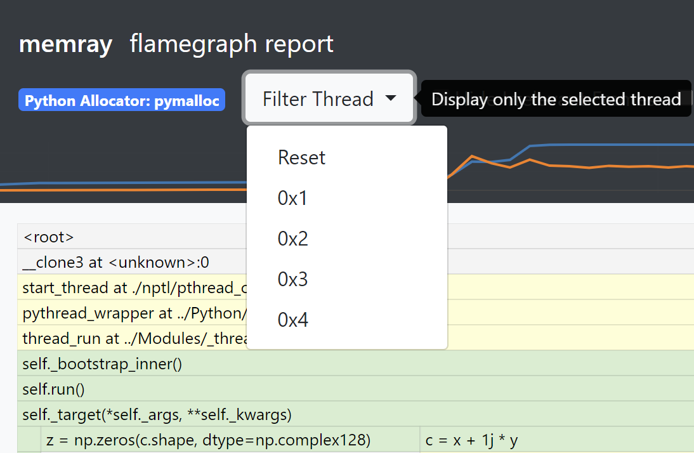
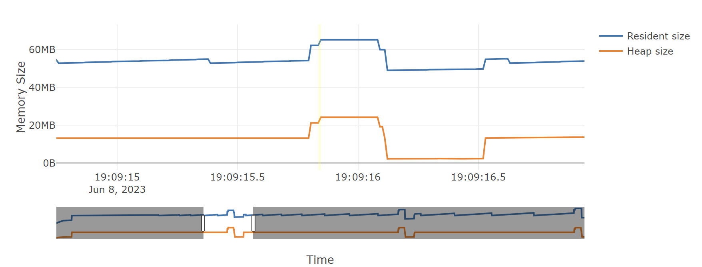

Flame Graph Reporter#
The flame graph reporter generates an HTML file containing a flame graph representation of the allocations contributing to the tracked process’s peak memory usage.
Flame graphs are a way to visualize how your program is spending its time. A few important things about flame graphs:
The flame graph displays the superposition of all stack traces that lead to memory allocations at a given time (normally the time when the total amount of allocated memory was highest).
A flame graph can’t tell you how many times a function was called, only how much memory that function allocated.
A stack trace is represented as a column of boxes, where each box represents a function call.
The x-axis does not show the passage of time, so the left-to-right ordering has no special meaning: every level just shows the collection of functions that were called by the nodes immediately under them.
The y-axis shows the stack depth, ordered from root at the bottom to leaf at the top. The top box shows the function that made a memory allocation and everything beneath that is its ancestry. The function beneath a function is its parent.
The width of each function box represents how much memory was allocated by that function or its children. Functions with wider boxes allocated more bytes of memory than those with narrower boxes, in proportion to their width.
Interpreting flame graphs#
Flame graphs can be interpreted as follows:
The nodes at the bottom of the flame graph represent functions that allocated memory.
For quickly identifying the functions that allocated more memory directly, look for large plateaus along the bottom edge, as these show a single stack trace was responsible for a large chunk of the total memory of the snapshot that the flame graph represents.
Reading flame graphs from the bottom up shows ancestry relationships. Every function is called by its parent, which is shown directly above it; the parent was called by its parent shown above it, and so on. A quick scan upward from a function identifies how it was called.
Reading flame graphs from the top down shows code flow and the bigger picture. A function calls all child functions shown below it, which, in turn, call functions shown below them. Reading top down also shows the big picture of code flow before various forks split execution into smaller shafts.
You can directly compare the width of function boxes: wider boxes mean more memory was allocated by the given node, so those are the most important to understand first.
Major forks in the flame graph (when a node splits into several ones in the next level) can be useful to study: these nodes can indicate a logical grouping of code, where a function processes work in stages, each with its own function. It can also be caused by a conditional statement, which chooses which function to call.
If the application is multi-threaded, the stacks of all the threads that contribute to the memory peak will appear commingled in the flame graph by default.
Simple example#
def a(n):
return b(n)
def b(n):
return [c(n), d(n)]
def c(n):
return "a" * n
def d(n):
return "a" * n
a(100000)
This code allocates memory from the system allocator in just 2 places:
c(), and d(). This is how the flame graph looks:
Here you can see that a() called b() and that b() called
c() and d(), which in turn did some allocations. As the boxes of
c() and d() are of the same width, you know that both allocated
the same amount of memory.
A more complete example#
def a(n):
return [b(n), h(n)]
def b(n):
return c(n)
def c(n):
missing(n)
return d(n)
def missing(n):
return "a" * n
def d(n):
return [e(n), f(n), "a" * (n // 2)]
def e(n):
return "a" * n
def f(n):
return g(n)
def g(n):
return "a" * n * 2
def h(n):
return i(n)
def i(n):
return "a" * n
a(100000)
This code allocates memory from the system allocator in 5 places:
e(), d(), g(), i() and missing(). The associated
flame graph looks like this:
The top edge shows that function g() allocates the most memory,
d() is wider, but its exposed top edge is smaller, which means that
d() itself allocated less memory than the one allocated by the
functions called by it. Functions including b() and c() do
not allocate memory themselves directly; rather, the functions they
called did the allocating.
Functions beneath g() show its ancestry: g() was called by
f(), which was called by d(), and so on.
Visually comparing the widths of functions b() and h() shows
that the b() code path allocated about four times more than h().
The actual functions that did the allocations in each case were their
children.
A major fork in the code paths is visible where a() calls b()
and h(). Understanding why the code does this may be a major clue to
its logical organization. This may be the result of a conditional (if
conditional, call b(), else call h()) or a logical grouping of
stages (where a() is processed in two parts: b() and h()).
In our case we know is the second case, as a() is creating a list
with the result of b() and h().
If you look carefully you can notice that missing() allocates
memory, but it does not appear in the flame graph. This is because at
the time the largest memory peak was reached (when a() returned) the
memory allocated by missing() didn’t contribute at all to the total
amount of memory. This is because the memory allocated by missing()
is deallocated as soon as the call ends.
With this information, we know that if you need to choose a place to start
looking for optimizations, you should start looking at g(), then
e() and then i() (in that order) as these are the places that
allocated the most memory when the program reached its maximum. Of
course, the actual optimization may be done in the callers of these
functions, but you have a way to start understanding where to optimize.
Non-relevant frame hiding#
The flame graph exposes a button to show or hide frames which might be distracting when interpreting the results, either because they were injected by Memray or because they are low-level implementation details of CPython. By default, frames tagged as irrelevant are hidden. You can reveal them by unchecking the Hide Irrelevant Frames checkbox:
Note that allocations in these frames will still be accounted for in parent frames, even if they’re hidden.
Inverted View#
Although the flame graphs explained above show the calling functions below and memory allocating functions above, flame graphs can be inverted so that the calling functions are at the top, while memory allocating functions are at the bottom. In this view, look for wide ceilings instead of wide plateaus to find functions with the largest allocation of memory.
To invert the flame graph, press the Invert button:
Memory Leaks View#
When generating flame graphs, the --leaks option can be specified
to get information for memory that was leaked during the tracking
(i.e. allocated after tracking started and not deallocated by the time
tracking ended).
Important
The Python allocator doesn’t necessarily release memory to the system
when Python objects are deallocated and these can still appear as
“leaks”. When you use the --leaks option, you should usually
also run your application with the PYTHONMALLOC=malloc
environment variable set. See our documentation on python
allocators for details.
Split-Threads View#
When generating flame graphs, the --split-threads option can be
specified to get thread-specific filtering on the flame graph.
If --split-threads is not specified, thread information is not
displayed on the flame graph. Instead, allocations occurring at the same
source location across different threads are grouped together. However,
if --split-threads is used, the allocation patterns of individual
threads can be analyzed.
When opening the report, the same merged thread view is presented, but a new “Filter Thread” dropdown will be shown. This can be used to select a specific thread to display a flame graph for that one thread:
To go back to the merged view, the “Reset” entry can be used in the dropdown menu.
Note that the root node (displayed as <root>) is always present and is displayed as thread 0.
Temporal Flame Graphs#
As noted above, the snapshots generated by memray flamegraph normally show
you only a single point in time. By default, that’s the point when the
process’s heap memory usage was highest. If you provide the --leaks option,
it instead shows the point when tracking ended, so that you can inspect what
was still allocated at that point.
If the --temporal option is provided, memray flamegraph will create
a unique type of flame graph that we call a “temporal flame graph”. In this
mode, the flame graph can show you not just one point in time, but instead the
usage over time (with approximately 10 millisecond granularity by default).
A temporal flame graph includes a chart of the process’s memory usage over time at the top of the page, and two sliders.
If you don’t use the --leaks option, the temporal flame graph will show you
data about the point in your chosen time range where heap memory usage was at
its highest. Because the sliders are initially on the two extreme ends, it
starts off showing you exactly what the non-temporal report would: the moment
during tracking when the highest amount of heap memory was used. Moving the
left slider lets you ignore any high water mark that happened before it, and
moving the right slider lets you ignore any high water mark that happened after
it. You can use these to focus in on what your process’s heap memory usage was
at any point during its run. The particular time slice within your chosen
window where Memray found the high water mark is highlighted, though you might
not be able to see it unless you zoom in enough that a 10 millisecond time
slice is wide enough.
If you use the --leaks option, the temporal flame graph will show you
allocations performed within the time window you select and not freed by the
end of it. Because the sliders are initially on the two extreme ends, it starts
off showing you exactly what the non-temporal leaks report would: allocations
performed at any point after tracking started and not freed before tracking
ended. Moving the left slider lets you ignore allocations made before the point
you select. Moving the right slider lets you look for allocations that hadn’t
been freed as of an arbitrary point in time, rather than only seeing ones that
weren’t freed before tracking stopped.
These temporal reports can be used to gain fine grained insight into how your process was using memory at any point during its run, which can be invaluable for understanding its memory usage patterns.
Note
Temporal flame graphs contain much more data than the default non-temporal flame graphs, so they’re slower to generate, and the generated HTML files are also larger. They can’t be generated from aggregated capture files, which don’t contain the necessary data about allocations over time. They also can’t be used for finding temporary allocations.
You can see an example of a temporal flamegraph here.
Conclusion#
Flame graphs are effective visualization tools for a memory snapshot of a program. They give an insightful visual map for the execution of Python code and allow navigating areas of interest, letting you identify where to start looking for improvements. Unlike other code-path visualizations such as acyclic graphs, flame graphs convey information intuitively using line lengths and can handle large-scale profiles, while usually remaining readable on one screen.
Basic Usage#
The general form of the flamegraph subcommand is:
memray flamegraph [options] <results>
The only argument the flamegraph subcommand requires is the capture file
previously generated using the run subcommand.
The output file will be named memray-flamegraph-<input file name>.html
unless the -o argument was used to override the default name.
Reference#
usage: memray flamegraph [-h] [-o OUTPUT] [-f] [--temporal] [--leaks | --temporary-allocation-threshold N | --temporary-allocations] [--split-threads] results
Positional Arguments#
- results
Results of the tracker run
Named Arguments#
- -o, --output
Output file name
- -f, --force
If the output file already exists, overwrite it
Default: False
- --temporal
Generate a dynamic flame graph that can analyze allocations in a user-selected time range.
Default: False
- --leaks
Enables Memory Leaks View, where memory that was not deallocated is displayed, instead of peak memory usage.
- --temporary-allocation-threshold
Report temporary allocations, as opposed to leaked allocations or high watermark allocations. An allocation is considered temporary if at most N other allocations occur before it is deallocated. With N=0, an allocation is temporary only if it is immediately deallocated before any other allocation occurs.
Default: -1
- --temporary-allocations
Equivalent to --temporary-allocation-threshold=1
- --split-threads
Enables Split-Threads View, where each thread can be displayed separately. Allocations on the same source line across different threads are not merged, if this flag is passed.
Please submit feedback, ideas, and bug reports by filing a new issue at https://github.com/bloomberg/memray/issues